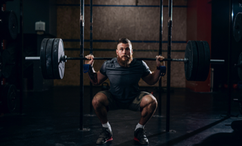
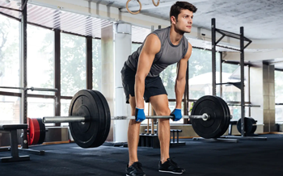
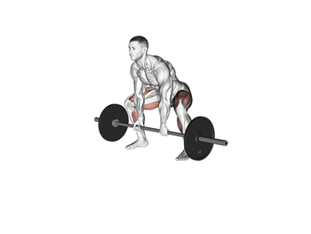
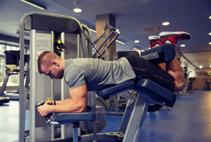
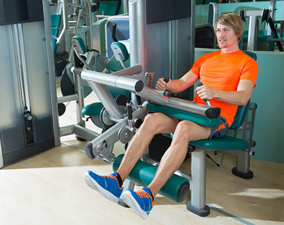
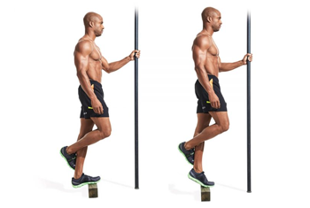
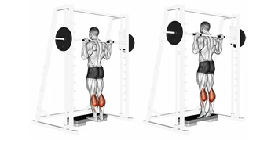

Sexta Feira - Posteior de coxa e Panturrilhas
Agachamento livre.

- Comece na posição em pé, apoie o peso nas costas, na região do trapézio e segure-o firmemente e retire-o do suporte;
- Depois, com a coluna reta, estabilize o tronco, com os pés ligeiramente virados para fora e separados paralelos aos ombros. Mantenha os joelhos estendidos na mesma direção dos pés. Deixe as escápulas encaixadas para trás e o abdômen contraído;
- Em seguida, desça o tronco e flexione os joelhos e movimente o quadril para trás. Então, desça até que as coxas ficarem paralelas ao chão e, durante esse movimento, o tronco se inclina para frente e a coluna permanece reta. Os joelhos não podem ultrapassar a linha dos pés;
- Depois, eleve o tronco por meio da extensão dos joelhos, trazendo o quadril para frente. Não se esqueça de contrair os músculos da coxa durante a subida;
- Ao finalizar suas repetições, coloque a barra de volta ao seu suporte com bastante cuidado.
Clique aqui para ver a execução em vídeo.
Stiff.

- Mantenha os pés afastados na largura do quadril, sempre apontados para frente;
- Depois, flexione devagar os joelhos;
- Em seguida, segure a barra com as palmas para trás e as mãos afastadas, de preferência na largura dos ombros;
- Coloque o seu quadril e flexione o tronco para frente;
- Desça a barra até o chamado limite de amplitude ou enquanto o tronco estiver reto;
- Retorne à posição inicial e repita o movimento.
Clique aqui para ver a execução em vídeo.
Levantamento Terra sumô.

- Pegue a barra de agachamento e coloque as anilhas, conforme o peso de sua preferência;
- Coloque-a encostada nas pernas, próxima às canelas;
- Em seguida, flexione um pouco os seus joelhos e retire a barra do chão;
- Ao levantar a barra, estique completamente os joelhos e o quadril;
- Após esticar completamente o corpo, volte à posição inicial e mantenha a coluna esticada;
- Repita o exercício novamente.
Clique aqui para ver a execução em vídeo.
Mesa flexora.

- Ajuste a carga antes de iniciar o exercício;
- Deite-se de barriga para baixo na mesa flexora;
- Em seguida, apoie os joelhos para fora do aparelho e deixe o apoio do equipamento um pouco acima do tornozelo;
- Depois, flexione as pernas e aproxime os calcanhares do bumbum puxando o apoio;
- Volte à posição inicial.
Clique aqui para ver a execução em vídeo.
Cadeira flexora.

- Sente-se no aparelho, apoiando sempre a coluna no encosto;
- Em seguida, mantenha os pés apoiados em cima da almofada, sempre na altura da linha dos tornozelos;
- Em relação à almofada que apoia o joelho, lembre-se de mantê-la acima dele;
- Depois, flexione os joelhos, contraindo os músculos da posterior da coxa;
- Lentamente, volte à posição inicial;
- Faça o movimento novamente ou até concluir o número de repetições.
Clique aqui para ver a execução em vídeo.
Elevação de panturrilha unilateral.

Levante o calcanhar pressionando a ponta do pé contra o chão e mantendo o joelho estendido. Mantenha essa posição por alguns segundos para ativar os músculos da panturrilha e só então desça lentamente até quase encostar o calcanhar no chão. Eleve o calcanhar novamente logo em seguida e repita essa sequência de movimentos até terminar sua série.
Clique aqui para ver a execução em vídeo.
Elevação de panturrilhas no smith.

De pé no smith, com as pontas dos pés posicionadas em cima do step, realize a flexão plantar até a contração máxima do músculo e depois desça, permitindo o alongamento máximo da panturrilha.
Clique aqui para ver a execução em vídeo.
Elevação de panturrilhas sentado.

- Sentar em um banco de forma a que os joelhos fiquem dobrados em um ângulo de 90º;
- Colocar um haltere sobre cada joelho, mantendo os pés bem apoiado no chão;
- Levantar o calcanhar, mantendo a ponta do pé no chão;
- Segurar a posição por 1 segundo e regressar à posição inicial com os pés bem apoiados.
Clique aqui para ver a execução em vídeo.